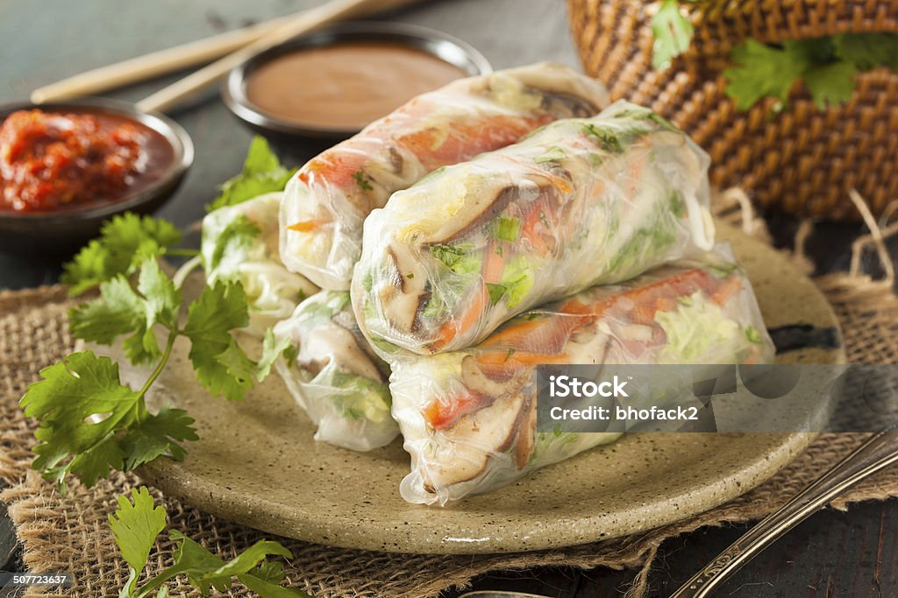

Fresh springrolls
Home

Description
Fresh springrolls are a Vietnamese delicacy. As opposed to their fried counterparts, and as the name implies, these springrolls are uncooked and as such are enjoyed cold. They typically contain a type of meat, such as pork or shrimp, as well as leafy lettuce and fresh herbs, and they are dipped in a delicious hoisin peanut sauce.
Ingredients
- Rice paper
- Shrimp
- Lettuce
- Shiitake mushrooms
- Rice noodles
- Coriander
- Mint
- Thai basil
- Hoisin sauce
- Smooth peanut butter
- Sugar
- Soy sauce
Steps
- Soak the rice noodles for 30 minutes, and prepare the remaining ingredients meanwhile
- In a separate bowl, soak your shiitake mushrooms – also for 30 minutes
- Boil a kettle full of water and set aside
- De-vein your shrimp and fry them till they're perfectly cooked
- Wash all your greens
- Tear the lettuce into reasonably sized leaves
- Remove the leaves from the stems of your herbs
- When done soaking, de-stem the mushrooms and cut them into strips
- Pour the water from the kettle onto a flat plate
- Gently soak the rice paper into the now lukewarm water on both sides, then put on a different plate
- Add your fillings, starting with a piece of lettuce, some rice noodles, mushrooms and an even mix of the three different herbs
- Fold both sides of the rice paper a third of the way, then half close the springroll, making sure to leave some space to add the final ingredient
- Add three or four shrimps to the remaining open space – make sure to place them with their backs facing outwards
- Repeat this process until your have your desired amount of fresh springrolls
- Put some hoisin sauce and peanut butter into a small pot and bring it to a boil, then lower the heat to a simmer
- Add some soy sauce and sugar to the mixture and dissolve
- Pour the sauce into a container for dipping, dip your fresh springroll into the sauce and enjoy!